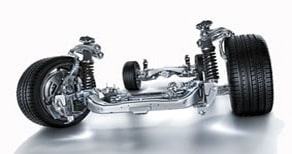

CТО
CТО
Капелла
ВНИМАНИЕ! Мы переехали!!!
Наш новый адрес:
ЧЕСТНЫЙ ремонт подвески автомобилей в Минске в рассрочку.
Ремонт подвески, замена рычагов, сайлентблоков, пружин, амортизаторов, стоек, ремонт ступицы, замена тормозных колодок и дисков, ремонт стояночного тормоза и многое другое на нашей СТО в Минске.
Официальная гарантия на все работы.
ВЫ ПЛАТИТЕ ТОЛЬКО ЗА РЕЗУЛЬТАТ!
Звоните ежедневно
с 9 до 20 часов!
 +375 (33) 600 23 47
+375 (33) 600 23 47
 +375 (29) 627 49 07
+375 (29) 627 49 07
или напишите свой вопрос на Viber
 +375 29 627 49 07
+375 29 627 49 07
 РАССРОЧКА на 6 месяцев!!!
РАССРОЧКА на 6 месяцев!!!
Ремонт авто сегодня, оплата потом!
Оцените нас:
Ремонт подвески - это, пожалуй, наиболее частая причина обращения в автосервис. Порой, в течение года приходится по несколько раз обращаться на СТО по поводу ремонта или диагностики подвески авто. Неисправность в подвеске или ходовой части автомобиля проявляется достаточно заметно: обычно в виде стука, характерного хруста и других посторонних звуков. Иногда полезно одну из поездок провести с приглушенной громкостью автомагнитолы и послушать работу своего автомобиля на предмет посторонних звуков в подвеске. Так, к примеру, нарастающий гул при наборе скорости движения может свидетельствовать о неисправности подшипника ступицы колеса. В таком случае на слух можно определить с какой стороны подвески исходит такой гул, и какой ступичный подшипник нуждается в возможной замене. Затягивать с заменой ступичного подшипника не стоит. В последствии можно разбить ступицу колеса, а это уже совсем другие затраты на ремонт.
 Стуки со стороны подвески, возникающие на неровностях дороги, говорят о неисправностях и возможной замене сайлентблоков рычагов подвески, нарушениях в работе стоек стабилизатора или шаровых опор. Сайлентблоки рвутся, и рычаги бьют о метал в местах подвижных соединений, разбивая посадочные места их крепления. При выборе сайлентблоков под замену лучше руководствоваться принципом доверия к проверенным, именитым производителям, так как многое зависит от качества резины, из которой изготовлен сайлентблок.
Ритмичное похрустывание при поворотах указывает на возможную неисправность шруса. ШРУС (шарнир равных угловых скоростей) - эта та деталь ходовой части авто, на которой не стоит экономить при выборе и замене. Шрус - это важный механизм подвески автомобиля, отвечающий за передачу вращательного движения вала на колеса авто и призвана решать проблему соединения осей вала и колеса, пересекающихся под разными углами, что позволило создавать автомобили с передним приводом. В задней оси автомобиля такая деталь подвески, как шрус, отсутствует. Шрус бывает внутренний и наружный. Соответственно, внутренний шрус расположен со стороны двигателя, а наружный со стороны колеса. Качество материалов и конструкции шруса сильно влияет на продолжительность работы этого элемента подвески. Качественный шрус может прослужить Вам до 5-7 лет, а то бывает и больше, в то время как дешевые аналоги начинают рассыпаться уже на втором-третьем году жизни шруса. Также необходимо следить за состоянием резиновых пыльников, защищающих шрус от агрессивного воздействия пыли и грязи летящей из-под колес автомобиля. Поэтому необходимо незамедлительно заменить пыльник шруса, если на нем замечены малейшие повреждения или трещины, дабы избежать разрушения шруса в результате попадания пыли и грязи.
Характерный писк при торможении говорит о необходимости проверить и, возможно, заменить тормозные колодки. Каких-то средних показателей жизни тормозных колодок нет. Все зависит от манеры езды. Но в любом случае каждые полгода при сезонной переобувке колес не забывайте посмотреть на тормозные колодки, иначе можно пропустить момент, когда они начнут портить тормозной диск и придется менять колодки вместе с тормозными дисками. Биение руля при торможении на больших скоростях говорит о возможной замене тормозных дисков ввиду их искривления от перегрева или низкого качества самих дисков, а так же необходимости проверки исправности или ремонте тормозных суппортов, которые могут являться причиной такого перегрева тормозных дисков в виду их заклинивания или нарушения работы цилиндров суппорта. Не стоит заниматься проточкой тормозных дисков. Стоимость новых тормозных дисков не на много дороже стоимости их проточки. Но при замене тормозных дисков на новые желательно произвести и замену тормозных колодок, иначе подношенные колодки, имея неправильную геометрию ввиду их износа, будут плохо притираться к поверхности новых тормозных дисков и, как итог, могут их испортить, что повлечет за собой покупку новых и замену тормозных дисков. Если искривление тормозного диска произошло из-за плохого качества диска, то Вы поймете это уже через месяц-два после проточки, тормозной диск в таком случае снова станет бить и Вам все-таки придется покупать и заменить на новые тормозные диски. При этом обязательно проверьте работу тормозных суппортов, так как перегрев дисков может быть также результатом их подклинивания из-за выхода из строя направляющих суппорта (как правило, нижних) отвечающих за ход скобы тормозных колодок в суппорте. Дело в том, что направляющие суппорта защищены резиновыми мягкими пыльниками, которые постоянно подвергаются воздействию воды и грязи с песком, летящим из-под колес, и со временем рвутся. Особенно этому воздействию подвержены нижние направляющие суппорта. В результате направляющая суппорта теряет смазку и кореет, переставая выполнять свою функцию. В таком случае необходима разборка суппорта для смазки или полной замены направляющих. Но это не единственно возможная причина заклинивания тормозов. Это может быть и неисправность тормозного цилиндра, закорелость других подвижных частей тормозного суппорта. Выявить истинную причину перегрева тормозных дисков поможет диагностика тормозной системы.
Но не все неисправности подвески можно определить по появившимся звукам. К примеру, вышедший из строя амортизатор дает о себе знать заваливанием автомобиля на поворотах или пританцовыванием на кочках и неровностях дороги. Амортизатор перестает гасить удары так как шток внутри амортизатора начинает ходить свободно не встречая сопротивления в результате потери герметичности. При этом автомобиль, по сути, опирается только на пружины. В таких случаях необходима замена амортизаторов, так как езда с такой неисправностью на повышенных скоростях чревата заносом ввиду плохого сцепления автомобиля с дорогой, особенно это опасно на мокрой и скользкой неровной дороге. Так же как не стоит делать проточку тормозных дисков, так и не стоит восстанавливать вышедшие из строя амортизаторы: этим Вы продлите жизнь амортизатора максимум на полгода, а разница в цене между восстановлением и покупкой новых и заменой амортизаторов несущественна. Замену амортизаторов, как и замену тормозных дисков и колодок рекомендуется проводить попарно.
При любых неисправностях подвески желательно не затягивать с ее диагностикой и ремонтом. Ремонт подвески при наличии запасных частей, как правило не занимает много времени.
Перечень работ по ремонту подвески автомобилей, выполняемых на нашей СТО в Минске:
- замена амортизаторов, пружин, опоры амортизатора, стойки амортизатора в сборе, опорного подшипника и т.д.;
- замена рулевых тяг, наконечников, шаровых опор, шруса, полуосей, пыльников и т.д.;
- ремонт ступицы колеса, замена подшипника ступицы;
- ремонт и замена суппорта;
- замена тормозных дисков, тормозных колодок, цилиндров, трубок, тормозной жидкости, прокачка тормозной системы и пр.;
- замена сайлентблоков, рычагов подвески, стабилизатора и т.д.;
- сварочные работы
В дополнение к любому ремонту авто мы выполним бесплатную диагностику всей подвески и ходовой части Вашего автомобиля.
УВАЖАЕМЫЕ КЛИЕНТЫ! Хотим обратить Ваше внимание на то, что ввиду конструктивных различий подвески различных моделей автомобилей, а так же в зависимости от степени закорелости крепления отдельных элементов подвески, одна и та же операция по своей сложности и трудоемкости может отличаться. Поэтому указанные ниже цены сформированы с учетом этих особенностей соответствуя минимальной и максимальной цене ремонта того или иного элемента подвески.
Для получения точной цены ремонта подвески именно Вашего авто, не стесняясь отправляйте нам запрос по форме указанной внизу этой страницы и мы дадим Вам ответ на любой интересующий Вас вопрос. Как правило, мы отвечаем в течение одного часа. Так же Вы можете написать нам на  +375 (29) 627-49-07
+375 (29) 627-49-07
Цены на самые распространенные работы по ремонту подвески автомобилей:
Ремонт тормозного суппорта - 45-55 руб.подробнее здесь
Замена дисковых тормозных колодок (одна ось с обеих сторон) - 40 руб.;
Замена барабанных тормозных колодок (с обеих сторон) - 70 руб.
Замена тормозных дисков (одна ось с обеих сторон) - 40 руб.
Замена тормозных дисков с колодками (одна ось с обеих сторон) - 40 руб.
Замена амортизатора - 45-60 руб. (за один)
Замена ступичного подшипника - 40-60 руб.
Замена наружного шруса - 35 руб.
Замена шаровой - 20-45 руб.
Замена пружины - 45-60 руб. (за одну)
Стоимость работ по ремонту и замене других элементов подвески и ходовой имеет большую разбежку между минимальной и максимальной ценой и во многом зависит от модели и года выпуска Вашего авто ввиду различных конструктивных особенностей. Поэтому цену на эти работы уточняйте, пожалуйста, у мастера.
Узнать стоимость ремонта подвески и ходовой части или других услуг по ремонту именно Вашего автомобиля Вы можете задав свой вопрос мастеру на  +375 (29) 627-49-07 или оставив свой номер телефона в поле снизу, и, как только мастер освободится, он перезвонит Вам, ответит на все Ваши вопросы и запишет на диагностику или ремонт Вашего автомобиля на удобное для Вас время.
+375 (29) 627-49-07 или оставив свой номер телефона в поле снизу, и, как только мастер освободится, он перезвонит Вам, ответит на все Ваши вопросы и запишет на диагностику или ремонт Вашего автомобиля на удобное для Вас время.
На ВСЕ РАБОТЫ, выполняемые у нас на СТО в Минске, для держателей карт рассрочки "Карта Покупок", "SMARTКарта", "Карта FUN" или "МАГНИТ" действует РАССРОЧКА на 6 месяцев. Если у Вас нет карты рассрочки, то оформить их можно через интернет в кратчайшие сроки без особых проблем. Ссылки на страницы банков для оформления карт рассрочки Вы найдете на главной странице нашего сайта здесь.
На все, производимые на нашей СТО в Минске, работы по ремонту подвески Вы получите от нас ОФИЦИАЛЬНУЮ ГАРАНТИЮ. Но даже по ее истечении мы не бросаем своих клиентов и, если гарантийный случай наступил не в результате естественного износа, а по нашей вине, то мы исправим и заменим вышедшие из строя части подвески за свой счет.
Отправка запроса Вас ни к чему не обязывает. Спрашивайте, мы рады будем Вам ответить!
Заполните поля (модель автомобиля, желательно указать VIN-номер для более точного подбора запчастей, способ получения ответа, элементы подвески требующие замены или ремонта) и отправьте запрос.
Ответ с ценой интересующего Вас ремонта и условиями Вы получите через 30-60 минут указанным Вами способом.
Если произошла задержка с получением ответа, то не судите строго, клиентов много и от их количества зависит насколько быстро мастер обработает Ваш запрос. В любом случае мы Вам ответим. Мы отвечаем на все присланые запросы.
Мы гарантируем, что введенная Вами информация не попадет в руки третьих лиц. Мы не используем Ваши контакты для рассылок и гарантируем конфиденциальность введенной Вами информации.
Остались вопросы по ремонту автомобиля или работе СТО?
Задайте их по телефонам  +375 (33) 600 23 47 или
+375 (33) 600 23 47 или  +375 (29) 627 49 07 или отправьте свой вопрос мастеру на
+375 (29) 627 49 07 или отправьте свой вопрос мастеру на +375 29 627 49 07
+375 29 627 49 07
* сроки гарантии на выполненные работы регулируются п.107 Главы 15 "Правил бытового обслуживания потребителей"
минск.мой-автосервис.бел © 2016-2020 ООО "КапеллаПлюс" УНП 191187089